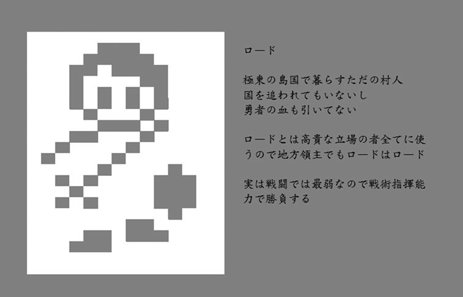

| FE フレイム・エスカシャン: サーガA (14th Fleet ゲームブック) | |
| 14th Admiral | |
| UNKNOWN (2017) | |
....................................
フレイム・エスカシャン サーガＡ（アライアンス）
Flame Escutcheon Saga Alliance
～炎紋章の盾～
「だからさ。いつか騎士団に入って、団長にまで上り詰めて、でもってお姫様と結婚だ。それで俺も一国の領主になれる」
ロードはいつものセリフを繰り返した。言い続ければ叶うという言霊を信じているからだ。だが実際は大陸極東の孤島で生まれた、これ以上なく平凡な少年だった。
「はいはい、マイロード。そのときはお仕えしますから、どうか高給出してくれ」
ウォールは鎧をガチャガチャいわせながら、手慣れた口調でロードをいなした。親友なもんだから、食事の前の祈りより多く聞かされてきたのだ。実際はウォールの方がまだ可能性があるだろう。体格のある彼は、島に唯一ある村の門番に選ばれ、前任のお下がりながら十分使用に耐えうるフルプレートメイルを着ることを許されているからだ。
「で、今日の訓練――と称した遊びは何だい？ 島東の森なんて、使われてない塔が一つあるっきりだぞ？」
エイムは狩人だ。森の中のことなら何でも知っている。西の大陸の大会に出たことがあるくらい、弓の腕前は確かだ。何よりエイムが獣を狩ってきた日は村のみんなで宴会が開かれた。目当てのもも肉を分けてもらうためにも、エイムと仲良くしていて損はないのだ。
「視界と道幅の狭い中での訓練だ。二人並べるかどうかって狭さだから、前後には動きやすいが横が難しい。通り抜けにくいとも言えるし、守りやすとも言えるだろう」
ロードは答えた。
「お前、そういう分析だけは昔から得意だよな」
ウォールが茶化した。武術がそれほどでもないことを暗に意味しているのだ。
「でも、その分、立ち回りは上手いよな。村人からの評価は悪くない」
エイムがフォローしてくれた。
ロードは思う。自分は打算的だろうか、と。一昨年、干ばつに見舞われた村で大火事が起こったとき、ウォールに壁抜きを、エイムに風読みをさせた俺の人材配置の的確さを、当時の村長は誉めてくれた。
「お前は人を使うのが上手い。結果、信頼も得られる。その才能を活かしなさい」
つい先月その村長は他界したが、彼の言葉を忘れることは一生ないだろうとロードは思っている。体格も技術も凡庸な自分の持つ、唯一の武器を最大限活用して、いつか一国の領主になるのだ。
もう数百度目かになる人生の誓いを立て直して、ロードは森の中へと踏み出していった。
最初に異変に気づいたのは、やはりエイムだった。
「おかしい。火が入ってる。物音も聞こえる」
まだ塔さえ見えていないのに、エイムは塔の様子を感じ取っていた。
「おい、あれ海賊じゃないか」
身長のあるウォールが、最初に視認した。
「村を襲うでもなく、こんな所で何してるんだ？」
ロードは急いで頭を回転させた。急いで村に知らせるべきだろうか、それとももう少し情報を集めてからがよいだろうか。一人二人なら自分たちで始末して名を上げることもできるかもしれない。使命感と私欲とが激しく行き来したが、結局三つ目の選択肢しかなくなった。脇の獣道から出てきた別の海賊と鉢合わせしてしまったからだ。
「......おっと！ おい、お前ら。ここで何してる。あの女は俺たちの獲物だぞ。せっかく大金と交換するチャンスなんだから......」
そこまで言って海賊は口をつぐんだ。これだから腕っぷしだけのヤツには辟易する、と思う一方でロードは、これは自分にとってもチャンスだと思った。この海賊は余計なことを言った。大金と交換できるような女性を誘拐してきたというのだ。貴族か王族か。いずれにしろ、このまま引き下がるわけにはいかない。人道的にも打算的にも、見逃せるはずがなかった。
....................................
■ＦＥとは
ＦＥ（フレイム・エスカシャン：Flame Escutcheon ）は、ドラマティック・シミュレーションRPG をゲームブックで再現することを目的に作られた連作短編シリーズです。少しずつ舞台や部隊や時代を変えながら、剣と魔法の世界を戦い抜く物語が描かれます。ドラマを描くに適した『ゲームブック』という媒体で、いかに心躍るSRPG のシステムを構築するか、数名の作家が知恵を絞って執筆します。物語の行く末だけでなく、切磋琢磨する作家や作品の変化にも目を向けながら楽しんでみてください。
■フレイム・エスカシャン・サーガＡ（ＦＥA ）
作家"提督"による作品をサーガＡとします。
■ＦＥルール（Ver.A1 ）
主人公であるロードは、ごくごく平凡な少年ですが、その人材活用能力には一目置かれています。仲間を効果的に動かし戦果を上げることで、自らの名声を上げていくことが目的です。名声が上がれば、ついてくる仲間も増えていくことでしょう。いつか一軍の将、一国の領主になることを夢見て、ロードの長い戦いの旅が始まります。
主人公ロードには『名声値』が、仲間となるキャラクターには『雇用値』が設定されています。雇用値の合計が、名声値を越さない範囲で仲間を募ることができます。信頼関係のあるキャラクターは、低い雇用値で仲間になってくれます。初見の相手では、高い雇用値を必要とするでしょう。しかしロードが名声を上げていけば、おのずと多くの仲間を募れるようになるでしょうし、個々のキャラクターと信頼関係を築けば雇用値が下がることもあるでしょう。
名声を高め、信頼を築き、この世界での影響力を高めていきましょう。夢を現実とする日まで。もちろん、そんな個人的な野望とは関係なく、世界は激動のときを迎えつつあるのですが......

■初期パラメータ
ロード ：指揮官 名声値：3
ウォール：壁戦士 雇用値：1
エイム ：狩人 雇用値：2
それではサーガＡの開幕です。
....................................
【サーガＡ ?T面】～囚われ塔の高きひと～
「怪我したいってわけだな」
海賊が斧を取り出してすごんだ。
「向こうの海賊も気づいて接近してくるぞ」
ウォールが短槍を握りながら警告した。
「......！」
奥の海賊は何か叫びながら、鎚を振り回して走り寄ってくる。
「ロード、塔に人影が見えた。女性だ！」
エイムは矢をつがえながらも、海賊の言葉の裏付けを取った。
「よし......」
ロードは自前の中古の小剣を抜きながら、素早く思案した。もっとも効果的な動き方は何か、もっとも有効な布陣はどれか。
「まずは行動線だ」
目の前の海賊、奥の海賊、塔の女性、ずっと背後には自分たちの村もある。すべてに同時に対処できるわけではない。こちらは３人だけなのだ。
「しかし数の利は、こちらにある。この数的優位を生かさない手はない」
■目の前の海賊、奥の海賊、塔、村の４ヶ所に
■ロード、ウォール、エイムを振り分けること
行かない場所も当然出てくるし、同じ場所に２人以上行かせてもよい。
人材配置を決めたら、以下の選択肢のうち人を配置した場所の中から、より優先順位が高いと思う場所を１つ選んで読み進むこと。
....................................
何を置いても、目の前の敵だろう。
「目の前の海賊を攻撃だ！」
誰を配置しただろうか。
・２人以上：数は最大の戦力だ。普段から一緒に行動していた仲間の連携に、海賊は翻弄され、集中攻撃され、そして倒れた。
・ロード ：小剣で海賊の斧と渡り合う。訓練はしたが、経験が足りなかった。海賊の斧がロードの肩を砕いた。「こ、こんなところで......」 【14 】へ進め。
・ウォール：斧の威力に苦しむも、分厚いプレートメイルはそれを耐えしのぐ。海賊を倒した。
・エイム ：弓は離れててこそ効果を発揮する。近距離では撃つ前に叩き切られるだけだった。「上手く......使ってくれよ」 【14 】へ進め。
みんな生き残っているなら他の場所を確認せよ。全ての仲間が行動を終えていたら、行動終了を選べ。
....................................
もう一人の敵も放っては置けない。
「奥の海賊を早めに始末しろ！」
誰を配置しただろうか。
・エイム ：何人配置しようが、エイムがいれば勝負は一瞬でつく。遠距離戦では海賊など相手ではないのだ。
・他の２人：エイム以外の２人で対処した場合、接敵まで時間がかかるものの倒すことは可能だ。
・ロード ：小剣で海賊の斧と渡り合う。訓練はしたが、経験が足りなかった。海賊の斧がロードの肩を砕いた。「こ、こんなところで......」 【14 】へ進め。
・ウォール：遠くまで無理して走った上に、鎚の衝撃と渡り合うのは分が悪かった。分厚い鎧の弱点だ。ウォールは倒れる。「ロード......名を上げろよ」 【14 】へ進め。
みんな生き残っているなら他の場所を確認せよ。全ての仲間が行動を終えていたら、行動終了を選べ。
....................................
女性の安全確保が第一だろう。
「様子を見に行かなければ！」
すでに奥の海賊を倒しているだろうか。倒していなければ、すれ違いざまに鎚の一撃を喰らって倒れる。 【14 】へ進め。
すでに倒していたら、無事に塔までたどり着ける。塔は鍵がかかっていたが、上の窓から女性が傷薬を投げてくれる。戦闘で誰かが倒れたとき、その被害をなかったことにでき、またその人物を別の場所へ派遣し直すことができる。傷薬を使った時は、すぐにその場でその人物の配置を再設定すること。
「がんばって！」
応援する女性の声は、身分に関わらず高貴なものに聞こえた。
他の場所を確認せよ。全ての仲間が行動を終えていたら、行動終了を選べ。
....................................
村の安全を守らなければ。
「村へ危急を伝える！」
しかし遠く離れた村から応援が駆けつけるまでには、かなり時間がかかる。それまで他の仲間で持ちこたえられるかどうかが鍵だろう。
他の場所を確認せよ。全ての仲間が行動を終えていたら、行動終了を選べ。
....................................
ここまでで海賊を二人とも倒していただろうか。
・すべて倒せていなかった場合、疲れて動けなくなったところを攻撃されて倒れてしまう。 【14 】へ進め。
・海賊をすべて倒していたなら、村が襲われることもなければ、塔の女性に危害が加えられることもない。すばらしい戦果と言えるだろう。名声＋１。また今回のことで個人の戦闘力も高める必要性を感じたロードは、貯金をはたいて長剣を手に入れる。 【2 】へ進め。 （ただし、もし戦闘中に村に伝令を送っていたなら 【13 】へ進め ）
....................................
「ありがとうございます！」
清楚ながら、はつらつとした声が印象的な女性だった。名前をハイネスと言うらしい。
「私の角馬があれば空を飛んで逃げられたのに」
ハイネスが言うには、空を駆ける角の生えた馬と水飲み場で休んでいたところを海賊に囚われてしまったらしい。
「ちょっと抜けてるな」
「あら、はっきり言うのね」
わずかに言葉を交わしただけだったが、ロードは相性が合いそうだと感じた。
「海岸線に騎士団が来てるわ。合流しましょう」
「あんた、騎士団と来てたのか？」
そうロードが来たとき、ちょうど馬の蹄の音が聞こえてきた。
「ハイネス姫！」
「ご無事でしたか！」
それぞれ剣と槍を下げた騎士が急いで駆けつけてくる。
「ナイト、ランス！ 無事だったのね」
どうやら剣騎士がナイトで、槍騎士がランスというらしい。
「姫、この島民たちは？」
「海賊に囚われていた所を助けてもらったの。味方よ」
姫様の忠実な騎士といった感じだな。ロードは少しイラつく自分を感じた。
「姫。我々の船と、村とが海賊に包囲されています」
「なんだって！？」
ナイトの報告にウォールが先に反応した。彼には村を守る使命があるのだ。
「姫の角馬は森のどこかの水飲み場に逃げたのではないかと推測されます」
「角馬――ユニコーンか。なるほどね。この森には水源が豊富にあるから、どこかにはいそうだな」
今度はエイムが反応した。
「村を守らなきゃ！」
「騎士団の船が海賊船に鎮められたら、この島を出られなくなります！」
「私の角馬も探してよね！」
みんな好き勝手言っちゃって。ロードは悩ましい顔をした。会ったばかりの騎士団だが、協力を仰げれば行動の幅が出て来るのだが。助け船は姫から出してくれた。
「この島のことに詳しいだろうし、塔から救ってくれた手際を考えると、あなたに指揮をお願いしたほうがいい気がするわ」
騎士たちはやや不満顔だったが、姫に逆らえないのだろう。渋々といったていでロードに従ってくれた。
ロードは作戦を練った。
村は、ほど近い。騎士団の船と海賊船とは少し離れた海岸線に錨を下ろしているようだ。森は広くて角馬がどこにいるかは分からない。限られた戦力をうまく割り振らねばなるまい。指示を出しきれなかった仲間は、姫を護衛することになる。
■海賊突破
ロード ：指揮官 名声値：4 （～5 ）
ウォール：壁戦士 雇用値：1
エイム ：狩人 雇用値：2
ナイト ：剣騎士 雇用値：2
ランス ：槍騎士 雇用値：2
■村、騎士団の船、海賊船、森の水飲み場の４ヶ所に
■雇用値の合計が、名声値を越さない範囲で仲間を募り、振り分けること
現時点で全員の賛同を得られるほど名声値が高まっていない以上、全ての場所へは行けない。さらに行く場所が減ってよいなら、同じ場所に２人以上行かせてもよい。
人材配置を決めたら、以下の選択肢のうち人を配置した場所の中から、より優先順位が高いと思う場所を１つ選んで読み進むこと。
....................................
村を守る人間が必要だ。
「村の入口で待機して、海賊を寄せ付けないようにしてくれ」
誰を配置しただろうか。
・ロード ：長剣を装備したことでロードの戦闘力は多少向上した。とはいえ、もともと戦いに秀でているわけではない。姫を奪還しようとやってきた海賊をなんとか追い返したものの相応の傷を負ってしまった。奮戦の褒美として姫が傷薬をくれたが、さっそく自分自身に使うことになってしまった。
・ウォール： 【12 】へ進め。
・エイム ：身軽さを活かして間接攻撃をするのが仕事のエイムに拠点防衛は余りにも酷だった。矢は確かに海賊に命中して傷を負わせたが、そのあと接近されてエイムは斧に脳天から叩き割られてしまった。「前衛がいなくっちゃあ......」 【14 】へ進め。 （ただしもう一人仲間がいた場合は生き残る）
・ナイトかランス：さすが騎士団だ。多少の傷を負ったものの、見事に海賊を撃退し村を守ってくれた。しかし機動力が主体の騎馬を拠点防衛に回したのはいささかもったいなかったかもしれない。
みんな生き残っているなら他の場所を確認せよ。全ての仲間が行動を終えていたら、行動終了を選べ。
....................................
騎士団が帰れなくなってはいけない。あわよくば乗せてもらって一緒に行軍したいという密かな野望もあった。
「騎士団の船を守らなければ」
誰を派遣しただろうか。
・ロード ：走って騎士団の船へとたどり着き、残っていた兵士たちと協力して海賊を追い払った。
・ウォール：重い鎧を着て長い距離を移動するのは無謀だった。船にたどり着かないばかりか、道途中で海賊に囲まれたウォールは、鎧ごとその骨を砕かれた。「お......俺に走らせるなよな」 【14 】へ進め。 （ただしもう一人仲間がいた場合は生き残る）
・エイム ：走って騎士団の船へとたどり着き、残っていた兵士たちの背後から矢を射かけ、海賊を倒した。
・ナイトかランス：離れた場所へ駆けつけるのに騎馬ほど適した兵種はない。素早く船に残っていた兵士と合流して海賊を追い払うことに成功した。
みんな生き残っているなら他の場所を確認せよ。全ての仲間が行動を終えていたら、行動終了を選べ。
....................................
敵の船を押さえれば、海賊は降参するしかないはずだ。
「敵の本船をやるぞ」
誰を派遣しただろうか。
・ナイトかランス：離れた場所へ乗り込むのに騎馬ほど適した兵種はない。素早く船に残っていた見張りの海賊二人を始末して海賊船を制圧することに成功した。
・二人以上：仲間同士協力して海賊船を制圧することに成功した。
・一人だけ：戦力不足だった。一人で敵本船に乗り込むなど無謀だったのだ。 【14 】へ進め。
みんな生き残っているなら他の場所を確認せよ。全ての仲間が行動を終えていたら、行動終了を選べ。
....................................
角馬の探索に誰か回す必要があるだろう。
「ちょっと見てきてくれ」
誰を探索に出しただろうか。
・ロード ：多少時間はかかったが、無事に角馬を見つけた。姫の香りがしたのか、角馬は素直にロードに従った。姫はお礼に傷薬を渡してくれる。戦闘で誰かが倒れたとき、その被害をなかったことにでき、またその人物を別の場所へ派遣し直すことができる。傷薬を使った時は、すぐにその場でその人物の配置を再設定すること。
・ウォール：重い鎧を着た彼が、森の中の探索に向いているとでも？ ガチャガチャ音を立てて逃げられてしまった。無駄足だ。
・エイム ： 【11 】へ進め。
・ナイトかランス：森の中では馬はむしろ動きを制限されるし、何より姿と音が目立った。探索は失敗だ。それに実のところを言うと、放っておいても角馬は姫のところへ帰ってきた。パートナーを見捨てたりはしなかったのだ。騎士たちはがっくりと肩を落とした。
みんな生き残っているなら他の場所を確認せよ。全ての仲間が行動を終えていたら、行動終了を選べ。
....................................
ここまでの戦果を確認せよ。
■海賊船を沈めた。
■村と、騎士団の船の『両方を』守った。
・両方の条件を満たしていれば、作戦は完全成功だ。海賊すべてを討伐し、名声＋１。 【3 】へ進め。
・どちらか片方の条件を満たしていれば、海賊は散り散りに逃げ去ってゆく。勝利だ。 【3 】へ進め。
・どちらも満たしていないなら、村か騎士団の船が壊滅的な被害を受ける。作戦は失敗だ。 【14 】へ進め。
....................................
実のところ角馬は放っておいても姫のところへ帰ってくる帰巣本能があった。探索いかんにかかわらず角馬に再会できたハイネス姫はご満悦だ。
「よかったらこのまま護衛として騎士団について来てほしいわ」
騎士団の船まで送ったとき、姫は願ってもない言葉を発した。いや、目論見どおりだろうか。とにかくロードたち三人は、夢に一歩近づいたらしい。しかし、そのとき波間からザバリと姿を現した者がいた。生首を手に下げた老齢の戦士だった。
「姫！ 勝手に決めてもらっては困りますな」
「老師！」
「マスター！」
ナイトとランスが同時に反応した。どうやら彼らの武術の師匠らしい。
「その生首は？」
さほどうろたえた様子も見せずハイネスが聞きただす。
「劣勢を悟って逃げようとしていた海賊の船長を始末してきましたぞ。まったく、大事なことを忘れて戦勝気分に浸るなど言語道断」
マスターの指摘にナイトとランスは恐縮した。
「ちぇ」
「勝てねぇなぁ」
どうやら、いつもこうらしい。
一方ロードは、同行を却下されるのではないかとヒヤヒヤしながら、そして本当はこういう達人に剣を習いたいのにと羨望しながら、マスターをじっと見ていた。老師マスターもまた、ロードたちをまじまじと観察していた。
「筋肉のつき方が偏っている。特定の武器や攻撃方法にしか対応できまい。足の運びや身のこなしを見るに、技術的にも未熟だ」
マスターは容赦ない。
「だが......力と技はあとからいくらでも鍛えられるが、心はそうはいかん。村や姫を守ろうという気概、仲間と協力して行動しようとする絆、適材適所を見抜く目。悪くなかった。鍛えれば伸びそうだな」
そこで初めて老師マスターは笑った。
「では......？」
ロードは恐る恐る確認する。
「いいだろう。姫がお望みとあらば、護衛としてふさわしい戦士に鍛え上げてやろう。覚悟しておけ」
ロードたち三人は一斉に飛び上がった。
三人が村で出立の準備をし、村の人々にいっときの別れを告げ、そして船に乗り込んだその夜、事件は起きた。最初に気づいたのは、船の見張りに立って雑談をしていた騎士たちだった。
「またライバルが増えちまったな」
ナイトが船のへりにもたれかかってボヤいた。
「剣のか？ 恋のか？」
ランスは興味なさそうに、しかし鋭く切りかえす。
「両方だよ......おや」
少しふてて船外に目をやったナイトが、何か動くものを捉えた。ナイトの夜目は定評があった。
「ん？」
ランスも何かの動く音を聞きつけた。
「ランス......聞こえたか」
ナイトが小声で同僚にささやく。
「ああ。何かいるな」
ランスも小声で返し、暗闇に目を向ける。船内や海や岸辺の暗がりに目を凝らすが、なかなかそれらしいモノは見つからない。当然だ。それらは闇と同じ色の肌をした悪魔たちだったからだ。黒い羽を持った翼魔と、魚の鱗に覆われた海魔は、突然二人の前に現れた。
「敵襲、敵襲！」
船内は直後、戦場となった。
「すでに無数の敵に囲まれている。この船の要所は四ヶ所。ハイネス姫のいる貴賓室、海図のある船長室、舵のある甲板、資金を載せた倉庫だ。敵の急襲で指揮系統が混乱しているが、大声を張り上げれば指示は通るだろう。俺が統率する」
ロードは宣言した。実際、船内は敵味方入り乱れており、各個で対応に追われていたのだ。だが全員の様子は把握できていた。近くの貴賓室の小窓からハイネス姫が覗いてこちらの様子をうかがっている。ロードは素早く近づいて言葉を交わした。
「部屋で身を守っていてもいいし、敢えて貴賓室から出ておくのも手だろう。どうする？」
「角馬に乗れば空を飛べるから逃げやすいかもしれないけれど......あなたの判断に任せるわ。それよりも、これを」
ハイネスは自分の首飾りを外して、ロードの首にかけ直した。小さな盾型の飾りの表面に、炎の紋章が描かれている。
「これは......？」
「フレイム・エスカシャン。私の国の紋章なの。お守りのおまじないがかかってるそうよ。貸してあげるから、しっかり働いて」
そう言ってハイネスはウインクした。可憐なんだか、強引なんだか。ロードがドキリとしたのは確かだった。
「よし」
ひと声上げて、自分に気合を入れたロードは、状況を分析する。甲板でナイトとランスが気合いの声を上げているから、二人の居場所は明らかだ。同じ船室をあてがわれたウォールとエイムは当然、すぐに動いてくれる。ロードが具体的に指示を出そうとしたとき、自分の船室に飛び込んできた海魔を始末したらしい老師が、折れた三叉鉾を持って廊下に出てきた。ロードのことをじっと見ている。
「歳を取ると大声が出せん。お前が指示を出せ」
試しているのか？
望むところだ。ロードは大声で指示を出し始めた。
■騎士団船防衛
ロード ：指揮官 名声値：5 （～7 ）
ウォール：壁戦士 雇用値：1
エイム ：狩人 雇用値：2 （～1 ）
ナイト ：剣騎士 雇用値：2
ランス ：槍騎士 雇用値：2
マスター：老師 雇用値：3
ハイネス：角馬 雇用値：1
■貴賓室、船長室、甲板、倉庫の４ヶ所に
■雇用値の合計が、名声値を越さない範囲で仲間を募り、振り分けること
指揮権を与えられたものの、全ての仲間に一度に指示を出せるほど注目されてはいない。限られた人員をうまく配置せよ。指示の出せなかった仲間は、現状を維持することだろう。
また、行ける場所がさらに減ってよいなら同じ場所に２人以上行かせてもよい。
人材配置を決めたら、以下の選択肢のうち人を配置した場所の中から、より優先順位が高いと思う場所を１つ選んで読み進むこと。
....................................
単なる直感か、一般常識か。とにかくロードは、ハイネスの貴賓室が狙われる予感がしていた。ハイネスが部屋に残ろうが残るまいが、貴賓室に人を残す必要を感じていた。
誰を配置しただろうか。
誰を配置しようが実はここには誰も現れない。無駄足だったろうか。他の場所を確認せよ。
....................................
海図は重要だ。
人を配置したものの、何も起こらなかった。誰も来なかった。ひとまずは。
他の場所を確認せよ。
....................................
甲板は広いぶん激しい戦いが繰り広げられていた。弓兵は翼魔に対して有効に射かけられるだろうし、装備の多い騎士も甲板でならかろうじて戦えた。空を飛べる角馬は、ここが唯一の活躍の場だろう。一方、乱戦の経験のないロードや、機敏に動けないウォールはただの的にしかならない。
・エイム、ナイト、ランス、マスター、ハイネスが合計２人以上いるなら甲板を制圧できる。
・１人以下またはロードやウォールしかいないなら、甲板を制圧され、舵を奪われる。敗北だ。 【14 】へ進め。
まだみんな生き残っているなら他の場所を確認せよ。全ての仲間が行動を終えていたら、行動終了を選べ。
....................................
「やはり金品目当てか！」
倉庫には露骨なくらい悪魔が押しかけていた。悪魔が？ 金目の物を？ 一抹の疑念がよぎったが、敵がいる以上戦うしかなかった。
狭い通路と倉庫では、装備の多い騎士や空を飛べるのが強みの角馬は役に立たない。一方、壁となれるウォールにとってはうってつけの戦場だろう。また倉庫の荷物などを遮蔽物とすることで、エイムは効果的に援護することができる。
・ロード、ウォール、エイム、マスターが合計２人以上いるなら倉庫を制圧できる。
・１人以下なら、集中攻撃を受けて倒れてしまう。敗北だ。 【14 】へ進め。
まだみんな生き残っているなら他の場所を確認せよ。全ての仲間が行動を終えていたら、行動終了を選べ。
....................................
戦いは終わった。もう空に翼魔はおらず、水に海魔はなかった。
・船長室に誰か配置していたなら 【19 】へ進め。
・誰も配置していなかったなら 【18 】へ進め。
....................................
そのとき、貴賓室で爆発音が起こった。
「何もなかったと思ったのに！」
誰かが叫んだ。
貴賓室に誰を配置していただろうか。
そして、ここにいたハイネスには指示を出しただろうか。
・ここにハイネスを配置した。またはハイネスには指示を出していない（部屋に残ったまま）なら 【15 】へ進め。
・ハイネスを別の場所へ派遣したため誰もいないなら 【16 】へ進め。
・ハイネスを別の場所へ派遣した一方、別の兵を配置していたなら 【17 】へ進め。
....................................
エイムを探索に出すことにした。
「信頼してくれてありがとう。森のことなら任せてくれ」
「お前の特技はよく分かってるつもりだよ」
エイムとさらなる信頼関係を築いた。今後、エイムの雇用値を２から１へ下げてよい。
他の場所を確認せよ。全ての仲間が行動を終えていたら、行動終了を選べ。
....................................
ウォールを村の護衛につけた。というより、もともとの仕事に戻ってもらった。
「当然だ。これは俺の仕事だからな」
村の門からあまり動く必要もないため、重装甲の彼は存分にその守備力を発揮し、海賊を撃退した。適材適所だ。この奮戦によりウォールは村人から賞賛を、騎士団から新しい長槍を受け取ることとなる。また、この判断によりロードは村人からも騎士団からも一目置かれるようになった。名声＋１。
他の場所を確認せよ。全ての仲間が行動を終えていたら、行動終了を選べ。
....................................
お礼として村の鍛冶職人スミスが特別に鍛えた鋼の長剣を贈ってもらえる。これで少しは指揮官らしく見えることだろう。さらに名声＋１。 【2 】へ進め。
....................................
人生は取り返しがつかないものだ。
しかし――当人たちも知らないことだが――異世界からの加護（ブレス）を受けているロードたちは再戦のチャンスを得た。
IF 。
もし、あのとき違う選択肢を選んでいれば、未来は変わっただろうか。
自らの目で確かめるのだ。
....................................
「きゃあ」
悲鳴が響いた。戦いが集結した後だっただけに、声がよく響いた。間違いなくハイネスの声だった。貴賓室に駆けつけたとき、そこにはハイネスはおらず、爆発で穴の空いた壁から、外の暗い海と空が見えるだけだった。
「ハイネス......」
ロードは首にかけた盾紋章に思わず触れていた。何か予感があったから、これを渡してきたのかもしれない。
「必ず取り戻す！」
姫も老師もいなくなった船で、ロードは一人静かに誓う。この船の指揮官となり、いや、もっと仲間を増やし、悪魔の軍勢に対する同盟を組まなければならない。
「ウォール、エイム、ナイト、ランス。アライアンスを立ち上げるぞ！ 姫を......世界を救うんだ！」
フレイム・エスカシャンを巡る、一つのサーガの始まりだった。
サーガＡ（アライアンス） 一面クリア（続編へつづく）
....................................
誰もいないはずの貴賓室が爆発するなんて。急いで駆けつけると、何かの爆発で貴賓室の壁に大穴が空いており、外の暗い海と空がのぞいていた。
「きゃあ」
そのとき悲鳴が響いた。戦いが集結した後だっただけに、声がよく響いた。間違いなくハイネスの声だった。みなが貴賓室へ向かったため、誰もハイネスの側についていなかったのだ。
「まさか姫を避難させているとは、恐れ入りました。その戦術眼、我が手駒として欲しいくらいですねぇ」
聞きなれない声に振り向くと、そこには闇色のローブを纏った司祭が立っていた。
「......闇司祭！」
光の神ではなく暗黒神に使える闇の司祭が、意識を失いぐったりしたハイネスを抱えていた。
「暗黒神第一司祭ダクネスと申します。いえ、名前は覚えなくて結構。いずれ忘れられない名となります。それよりも......手間をかけさせられたものです。その手腕、その人望。いずれ再び敵として立ちふさがりそうな予感がしますなぁ」
味方よりも敵が最も正確に人を評価すると言うが......（名声＋１すること）。
「すぐにまた会いましょう」
そう言うなり、闇司祭はハイネス姫とともに夜の闇の中へと溶け込み、消えていった。
「ハイネス！」
叫ぶ声は、夜の闇を揺らすことさえできなかった。
「ハイネス......」
ロードは首にかけた盾紋章に思わず触れていた。何か予感があったから、これを渡してきたのかもしれない。
「必ず取り戻す！」
姫も老師もいなくなった船で、ロードは一人静かに誓う。この船の指揮官となり、いや、もっと仲間を増やし、悪魔の軍勢に対する同盟を組まなければならない。
「ウォール、エイム、ナイト、ランス。アライアンスを立ち上げるぞ！ 姫を......世界を救うんだ！」
フレイム・エスカシャンを巡る、一つのサーガの始まりだった。
サーガＡ（アライアンス） 一面クリア（続編へつづく）
....................................
「戦場は甲板だと言うのに、ここに人を配置するとは目ざといですなぁ。それも姫を事前に逃しておく手際。クロードとともに配下に加えたいものです」
貴賓室から声が聞こえた。ロードたちが急いで駆けつけると、そこには何人かの兵が倒れていた。爆発で穴の空いた壁から、外の暗い海と空が見えるが、敵の姿――声の主が見えない。
「きゃあ」
そのとき悲鳴が響いた。戦いが集結した後だっただけに、声がよく響いた。間違いなくハイネスの声だった。みなが貴賓室へ向かったため、誰もハイネスの側についていなかったのだ。
「まさか姫を避難させているとは、恐れ入りました。その戦術眼、我が手駒として欲しいくらいですねぇ」
聞きなれない声に振り向くと、そこには闇色のローブを纏った司祭が立っていた。
「......闇司祭！」
光の神ではなく暗黒神に使える闇の司祭が、意識を失いぐったりしたハイネスを抱えていた。
「暗黒神第一司祭ダクネスと申します。いえ、名前は覚えなくて結構。いずれ忘れられない名となります。それよりも......手間をかけさせられたものです。その手腕、その人望。いずれ再び敵として立ちふさがりそうな予感がしますなぁ」
味方よりも敵が最も正確に人を評価すると言うが......（名声＋１すること）。
「すぐにまた会いましょう」
そう言うなり、闇司祭はハイネス姫とともに夜の闇の中へと溶け込み、消えていった。
「ハイネス！」
叫ぶ声は、夜の闇を揺らすことさえできなかった。
「ハイネス......」
ロードは首にかけた盾紋章に思わず触れていた。何か予感があったから、これを渡してきたのかもしれない。
「必ず取り戻す！」
姫も老師もいなくなった船で、ロードは一人静かに誓う。この船の指揮官となり、いや、もっと仲間を増やし、悪魔の軍勢に対する同盟を組まなければならない。
「ウォール、エイム、ナイト、ランス。アライアンスを立ち上げるぞ！ 姫を......世界を救うんだ！」
フレイム・エスカシャンを巡る、一つのサーガの始まりだった。
サーガＡ（アライアンス） 一面クリア（続編へつづく）
....................................
突然、どこかで剣戟の音がした。
「船長室だ！」
耳の良いランスが、聞こえた方向を指差す。みんなが駆けつけると、そこには老師が倒れていた。血が床一面に広がっている。
「老師！」
「不覚......よの。海図も命も奪われてしまうとは」
ロードは、もう息絶えようとしている老師にかけよった。
「まだ敵がいましたか！？」
「かの黒剣士が......な」
「黒......剣士？」
「ロードよ......この騎士の剣を授けると同時に、指揮権をお前に預ける......姫を守ってやってくれ」
老師は、あっという間に息を引き取ってしまった。
駆け寄るナイトとランス。
ロードは思い描いた理想と違う現状に眉をひそめる。こんな形で指揮官になりたかったわけではない。老師には、もっと色々教えてもらいたかった。
「ハイネス姫にどう言えば......そういえば、ハイネスはどこだ？」
....................................
ロードはふと思い立って、配置していていた仲間と（または自分を配置したなら一人で）船長室を探る。あれだけの軍勢で攻め入りながら、取り立てて被害がなかったのが逆に違和感を感じさせるのだ。
「海図......広げてたっけ？」
ロードたち島出身の仲間は海に詳しいため、航路を決める会議に参加を求められ、ここで海図を見たばかりだった。しかしその時はたしかに老師が海図をしまっていたのだが......
ロードは広げられた海図をじっと見た。そう言えば航路は決定されたが、具体的な目的地は伏せられたままだった。
「ずいぶんと辺鄙な場所なんだよな。あるとしたら奇岩入江くらいで......あれ？」
ふと見たことのない地名を海図上に見つけた。
「神鳴りの神殿？ こんなの普通の海図に載ってないぞ」
だが聞いたことのある名前だった。
「伝説では異界の悪魔を封じるのに使う儀式の場所......だったかな。角馬に乗れる巫女でないと祈りは通じないとかいう言い伝えが......」
そこでピーンと来るものがあった。
「ハイネス姫を巫女にして儀式を行うつもりか！ つまり......悪魔の復活による危機は、そこまで切羽詰まっている？」
「ご名答」
いつの間にか、背後に黒いマントを羽織った剣士が立っていた。
「何か思うところがあって船長室に人を配置したのか、それとも虫の知らせでもあったか......後者ならむしろやっかいだ。運を味方に付けている者はなかなか倒れない」
何故かロードは敵から評価を受けたようだ（名声＋１すること）。
「神殿騎士団の海図を少し見せていただくだけのつもりが、人を配されてしまい、なかなか機会を得られなかった。人がいなくなるのを待つつもりだったが、君に興味が沸いて、つい出て来てしまった」
黒い剣士は予想外に饒舌だった。
「ペラペラと情報を漏らすのを不可解に思っているかね。君の疑念はもっともだ。だが、君が報告できなければよいのだよ」
ロードの全身に緊張が走った。
「そして、神殿の位置を示したその海図を頂いて先に神殿を破壊してしまえば、異界の悪魔を封じるすべはなくなるという寸法だ」
「そのプランは承諾できぬな」
すでに持ち場の仕事を終えたらしい老師がそこに立っていた。
「ふう。やはり早く立ち去るべきだったかな」
黒剣士はとぼけてみせたが、老師は取り合わなかった。
「私に見つかるのを待っていたな」
「何のことやら......だが、かつてのソードマスターにして神殿騎士団の長をここで始末できるなら、我々の仕事はしやすくなるだろうな。悪くないプランだ」
そこで黒剣士と老師は呼吸を止めた。一瞬後、老師が抜刀し突きを放っていた。が、それより速く反転した黒剣士は、突きの直撃をかわすと同時に抜きざまの黒剣で老師を逆袈裟に斬り裂いていた。
「......老師！」
ロードは叫ぶが、体が動かない。
「上等。自他の戦力差をわきまえるのが長生きの秘訣さ。神殿の位置はよく見させていただいた。先に行っているとしようか」
そう言って黒い剣士は、片目を押さえながら海図を手に走り去っていった。老師の最期の一撃が、黒剣士の片目を捉えていたのだ。
「不覚......よの」
ロードは、もう息絶えようとしている老師にかけよった。そう、不覚なのだ。騎士団船は文字通り泳がされていたのだ。船がどこへ向かうのか知るために。神殿騎士団が海図を持ち出した所を襲うために。
「ロードよ......この騎士の剣を授けると同時に、指揮権をお前に預ける......姫を守ってやってくれ」
老師は、あっという間に息を引き取ってしまった。
異変を察知して他の仲間が集まってきたが、老師はもう動かなかった。
駆け寄るナイトとランス。
ロードは思い描いた理想と違う現状に眉をひそめる。こんな形で指揮官になりたかったわけではない。老師には、もっと色々教えてもらいたかった。
「ハイネス姫にどう言えば......そういえば、ハイネスはどこだ？」
....................................
ファミコン・ゲームブックが量産された時代があった。TV ゲームの代償行為だったという分析もあるが、ゲームブックだからこそ成功した仕掛けもあったはずだ。そんな愛すべきゲームブックではあるが、ＦＥと省略される『あのゲーム』については、ゲームブック化に成功したとは言いがたかった。そもそもデータ勝負のシミュレーションRPG を本媒体で処理しようというのが無理難題だったろうか。いや、我らがゲームブックの可能性は無限に広がっているはずだ。そこで我々『第14 機動艦隊』の作家陣は、ＦＥシステムのゲームブック化に真っ向から挑むこととした。
ゲームブック化に成功したかどうか検討し分析しているので「ああ、あの部分のことか」などと振り返りながら読んでいただきたい。
またＦＥをいかにゲームブック化するかを目的として試作・検討しているわけなので、ここにはゲームブック作家への製作のヒントも多くあることだろう。ぜひ活用して（パクって）いただきたい。
■パラグラフ構成評価
・序盤・中盤・終盤のステージごとに、1-1( ～5) 、2-1( ～5) 、3-1( ～5) と規定のパラグラフを設定しておくため、テンプレートとして使いやすい。
→毎回リンクを貼らなくて良い。執筆時に混乱しない。読者にもわかりやすい（バレやすい）のを長所と見るか短所と見るか。
・特別なイベント（14 など）は、パラグラフ10 番台以降に設定することで、毎回リンクの貼り直しを避ける。
→ 逆に言うと、リンクを手作業で貼るのは10 番台のみ。
■システム評価
・軸にあるのは『限りなくＦＥなのに、データ処理が暗記でもできる』という基本方針。
・名声値（雇用値）という1 ベクトルのパラメータのみで兵種選択の悩みどころを生むことに成功。
・クラス／職業に加えて名前まで覚えてもらうのは読者負担が大きいだろうという判断で、Fate のような『名は体を表す』やり方を取った。
→ 露骨だが、逆にＦＥリスペクト感が出てるとも言える。
■ストーリー評価
・今回の企画は（訴えられない程度に）露骨なＦＥ寄せが目的なので、ＦＥ暗黒竜を踏襲。でも一応オリジナル。
→ 「お、あのタイトルだな」とニヤリとしてもらえるくらいで、ちょうどよい。
■その他
・パラメータを表示する場合は横書きが良いのでは、との判断で横書きのゲームブックとした。電子書籍なので、縦書きにこだわることもないだろう。
電子書籍の初期投資はごくごく少なくて済むが、EPUB 編集やリンクチェックなど独自のスキルが必要になってくるのがネックだ。だが、ここにあげたやり方なら（ＦＥに特化してはいるが）比較的簡単に電子書籍としての完成形まで辿り着くのではないだろうか。なによりチェックがしやすい。電子書籍でゲームブックを書いてみようという人は、参考にしてみてもらいたい。
また基本は読者だという方には、このシステムに関する感想やレビューをお寄せいただくことで、改善や続編に活かしたい。ぜひともコメントをよろしく！
第14 機動艦隊ブログ
http://blog.livedoor.jp/fleet14/
第14 機動艦隊ツイッター
https://twitter.com/PR_Officer14
提督
データ不詳
....................................
提督......第１４機動艦隊を立ち上げた人。ＦＥ企画の取りまとめもしている。ローリスク・ミドルリターンが信条なので、ネットに上げたＦＥプロモも手作り感満載。
三国陣......現役ラノベ作家。提督のクエスト攻勢（執筆依頼多数）により、ゲームブック作家というサブクラスを習得。
なべや......ウディコンゲームブック作家。『電子ゲームブック自由落下』で総合３位に輝く。
三国陣: はじめられますか？
提督:OK!
三国陣: 座談会始まり始まり～
提督: ぱちぱちぱち
なべや: ぱちぱち
提督: ＴＲＰＧリプレイっぽくなってきたｗ
提督: まずはＦＥ企画全体についての感想をほしいなぁ
三国陣: なべさんどうぞ
三国陣: いいだしっぺだし
なべや: いいだしっぺということになってる？
提督: にじみ出るＦＥ愛に気づいて僕が提案した感じ？
三国陣: ファイアーエムブレム大好きなんですよ！って言ったって聞いた
提督: たしかツイッターでもヒーローズが云々とかつぶやいてなかった？
なべや: いま、とても恥ずかしいのですが
三国陣: で、提督氏が書いてきたものが驚くほどシンプルなのにちゃんとＦＥっぽくなってた
提督: ありがとうございます
三国陣: すごいねーって
提督: 僕なりの愛です
なべや: そうそう、すごいコンパクトにまとまってて、兵種があり相性がありお約束も踏襲しつつ違っていて
なべや: うわーすごい
提督: なんかね、そういう「要望に答える仕事」って得意っぽいんですｗ でもオリジナルのすごい人にならねばｗ
三国陣: プレゼンも上手だなと思います。編集者っぽいというか......山師というか......
提督: 山師ｗ
三国陣: 褒めてますよ？ｗ
提督: プレゼンとか編集っぽいとかいうのは、どの辺りで判断されたんでしょう？
三国陣: 企画書がうまいｗ あと周りの人を巻き込もうとする、景気のいいことをとりあえず言うｗ
提督: ｗｗｗ山師だ。たしかにｗ
三国陣: 出版業界の人って、大体景気のいいことまず言うｗ 本職の編集もそう
提督: なるほどねー。ピグマリオン効果というか、言霊を信じていて、自分が夢見れない企画は成功せんだろうと......あ、主人公と同じだｗ
三国陣: 私はね、そういう人に踊らされるのが上手いんです
提督: 踊り上手ｗ
提督: もうちゃっかりサブクラスが定着しましたね
三国陣: 「ウディコンに出よう」ってなべさんが言わなかったら、こうはなってなかったんですよね。不思議な巡り合わせです
なべや: そうそう、ウディコンでゲームブックっぽいのを書いたらお声がかかって
なべや: 巻き込んでいただけて感謝です
提督: たしかに。現実こそ不思議なファンタジー。フィクサーとしては、サブと言わずゲームブック作家をメインクラスにのし上げる目論見ですが。ゲームブックをラノベよりも上の業界に育てたい！ だから謎解系脱出ゲームブックも書いてもらうので、そこんところよろしく！ｗ
なべや: 脱出ものはあこがれではありますねー
提督: 売れ筋は間違いなく脱出ゲームブックですからね
提督: ブームにもちゃっかり乗っかりつつ、自分も見失わない。そういふひとに私はなりたい。
三国陣: あれは別のところからお客さんを引っ張ってきててすごい
提督:SCRAP だけではもったいない。もっと広がっていいジャンルだと思いますね。それと、なべやさんは展覧会の絵とか、魔法使いディノンとか「いわゆるファンタジー」ではなく「幻想世界」を描く作家になれそうに思います
三国陣: で、ＦＥに話を戻す頃合いかしら
提督:YES! バレてたか。もちろん自分なりの自信があるから企画を出すわけですが、ＦＥサーガＡはあんな感じでよかったでしょうか。たたき台だからオーソドックスに攻めましたが。
なべや: 素晴らしいと思います！シンプルにまとまりつつ、いろんなアプローチが出来そうで、良いシステムだなーと私は思ってます
提督: あざーす
三国陣: オーソドックス。「あ、こういう正史が一本あれば色々できるな」って思いました
三国陣: 「実はあの事件にはこんな裏があって......」とかやるの楽しそうやん
なべや: うんうん
提督: 三人の世界は、いずれ絡んでくるんでしょうか？ｗ
三国陣: 絡めば面白いかなーと
提督: ですよね
提督: 薄っすらと「もしかしてあの事件のこと？」とか繋がるとテンション上がりますよね
なべや: 実は「Ａ」と「Ｒ」は既に絡んでますよね。ロード君がちらっと出てくる
提督: オープニングね
三国陣: で、「Ｒ」ではそのロード君がQWERTUIOP （伏せ字）みたいなことを狙ってて......あ、ネタバレ？
提督: ハーディン！！ ......矛盾が生じないように、僕は地名出さないようにしようかな。てか、もう他作品から地名指定されたようなもんかｗ（※この辺が、複数作家で作品を書く面白さです。刺激的）
三国陣: そこはほら、歴史家によって解釈が異なるんですよｗ
提督: 立場を変えれば、評価もね。たしかに三人が描くんだから、そういう立ち位置による価値観の違いは出したいですよね。十字軍とサラディン軍の評価のように
三国陣: 多面的なロード君がそこにいる
提督: そういや、ハーディンのモデルがサラディンですよね。間違いなく。
三国陣: ごめんなさい、civ の影響で「絶望的なサラディン」しか思い浮かばないｗ
提督: ん？ｗ ......では次回作について。お二人の作品が、それぞれの個性でバージョンアップしてるので、その辺も楽しみです。だから自分はオーソドックスを貫く予定（そう言っておいて裏切るのもあり）。とくになべやさんのリライト後の作品は、まさにナベヤワールドで一気に読みたい度が跳ね上がりました。あのナベヤワールド＆ナベヤ語録は、考えて出てくるものではないので、羨ましいですね。リライトして正解。少年の冒険譚なのにＦＥゲームブックのエンジンが活かされている
なべや: でも大分テイストが他二人と違うのでどうやって他のと絡ませれば良いのだろうと、悩んでます
三国陣: そのうちなんとかなる
なべや: 時代が違うとかで、ごまかす？ｗ
三国陣: いや、話が続いていくといつのまにか繋がるパーツができる。はずだ
なべや: ではそれに期待でｗ
提督: それに三人めは色合いが違う方がおいしいですよ
なべや: 色物枠ですね
提督: 王道ファンタジー＆ダークファンタジー( ホントか？) ＆ジュヴナイルファンタジー
三国陣: 色物ならもっと攻めないと。Ｒは、ダークなのかなあ？ ダークにしてもいいのだろうか
提督: それも、やりきってもいいかもですね。暗夜バージョン？
なべや: 「Ｒ」は、ほのぐらい感じがしますよね。レジスタンスですし
提督: 人を切って全体が生き残る、みたいな
なべや: 兵は無名ですし、大分躊躇なく出来そうな感じがします。ダークな話も
提督: 誰を殺し、誰を残すか。でも、そうなると名前ある方が葛藤が生まれるか。あのとき、アイツを殿軍にするんじゃなった、みたいな......キルヒアイス！
三国陣: え、村が焼かれたりとか裏切り者が出たりとかじゃ？
提督:WERTYUIOP とかASDFGHJKL とかZXCVBNM とか......
三国陣: まてまて、ブレストはじめない
提督: あ( 笑) ......ここはネタバレかもしれないから、削除で
なべや: はーい
提督: さて、無料配信のおまけトークですから、お二方から告知や今後の方向性が聞きたいな
なべや: 三国陣さんどうぞ
三国陣: 「Ｒ」は、強大な帝国に征服された王国で、レジスタンスとなって王女を擁立し、帝国に反旗を翻すという筋書きで、ピンチを切り抜けながら状況を打開すべく戦います。「武器」や「兵糧」の扱いがキモとなってくる仕掛けですね
三国陣: 民を守るためやむなく帝国側につく兄王子と、国を守るために立ち上がる妹王女の物語、でもあります
提督: そこにも葛藤があるなぁ。もうドラマの予感
三国陣: 私の中でＦＥはこういうイメージｗ
提督: でも、そうですよね。価値観の衝突。でも互いに自分なりの正義を信じてる。大学の英米文学教授が、ガンダムはポストモダンだ！って力説してました。さて、なべやさんの告知もお願いします
なべや: 「Ｄ」は貴種流離譚をテーマに、竜を呼ぶ亡国の王子＜少年＞とその庇護者の＜君＞が窮地を切り抜けつつ成長するという話になります。「Ａ」の名声値・「Ｒ」の求心力にあたるものはないですが、＜少年＞の自我という数値があります。他の二人とは少し違う雰囲気になると思いますが、よろしくお願いいたします。
提督: ありがとうございます。では、今日はこのへんで。
三国陣: おつかれさまです
なべや: おつかれさまでした
三国陣: まだざつだんしませう
提督: ぜひとも。次の対談はお二人のあとがきで！ 読者のみなさんも、それまでしばしさようなら！
....................................
■初期パラメータ（塔から逃がす）
ロード ：指揮官 名声値：3
ウォール：壁戦士 雇用値：1
エイム ：狩人 雇用値：2
■海賊突破
ロード ：指揮官 名声値：4 ～5
ウォール：壁戦士 雇用値：1
エイム ：狩人 雇用値：2
ナイト ：剣騎士 雇用値：2
ランス ：槍騎士 雇用値：2
■砦開放
ロード ：指揮官 名声値：5 ～7
ウォール：壁戦士 雇用値：1
エイム ：狩人 雇用値：2 ～1
ナイト ：剣騎士 雇用値：2
ランス ：槍騎士 雇用値：2
マスター：老師 雇用値：3
ハイネス：角馬 雇用値：0
....................................
ゲームブックのKindle 化はもっと大変なのでは、と思っていたが意外とすぐに終わった。横書きで通したのも楽だった一因か。これはこれで西洋ゲームブックのようで一興。ワードにリンク張ってHTML 形式で保存→Kindlegen で電子書籍化するだけで済んだ。パラグラフ番号にワードの見出し1 ～2 あたりを設定しておくと、ハイパーリンクを貼る際にひと目で選べてとても楽だった。いろいろな意味でアナログの勝利だ。
....................................
フレイム・エスカシャン
Flame Escutcheon
～炎紋章の盾～
サーガＡ（アライアンス）
2017 年発行
著者 14th Admiral
発行 14th Fleet
....................................